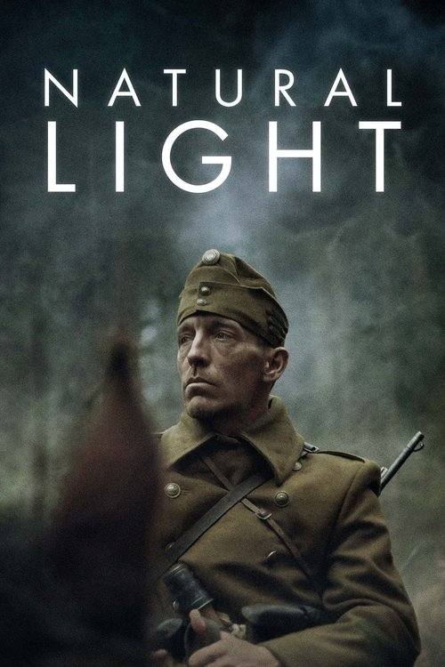

Natural Light (2021)
الوصف: World War II, occupied Soviet Union. István Semetka is a simple Hungarian farmer who serves as a Sub-Lieutenant in a special unit scouting for partisan groups. On their way to a remote village, his company falls under enemy fire. As the commander is killed, Semetka has to overcome his fears and take command of the unit as he is dragged into a chaos that he cannot control.
الممثلون
- Szabó Ferenc (Semetka)
- Tamás Garbacz (Szrnka)
- László Bajkó (Koleszar)
- Gyula Franczia (Major)
- Stuhl Erno (Vucskan)
- Zsolt Fodor (Fodor)
- Csaba Nánási (Nánási)
- Krisztián Kozó (Kozó)
- Mareks Lapeskis (Mihail)
- Gyula Szilágyi (Csorin)
المخرج: Dénes Nagy
المنتج: Marcell Gerö